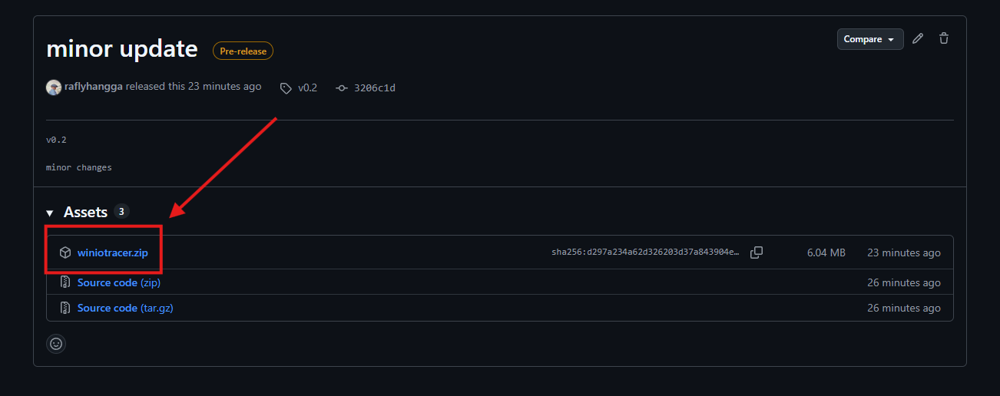

Quick Start Guide | Windows
üé• Here‚Äôs a quick video guide on installation and usage:
Quick Start | IO Tracer for Windows
Installation
-
Download the
.zipfile from the GitHub Release page and extract it.
 -
Move the extracted folder to your preferred location.
We recommend placing it under the Documents folder for easy access.
✅ Installation complete!
Basic Usage
-
Run the program as administrator
Right–click the file with the binocular icon and choose Run as administrator.

-
Program starts running
Once started, you’ll see the tool actively tracing.

-
Check the output
After closing the program, results will be saved inside theoutputfolder.

⚠️ Important:
To stop the program, do not close the terminal window directly.
Instead, press Ctrl + C to safely terminate it.